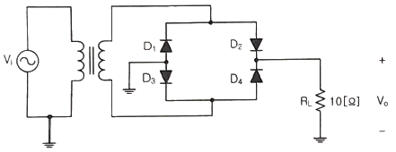
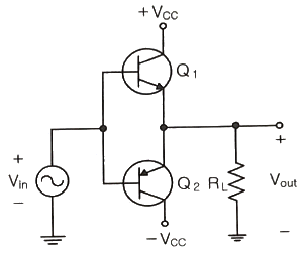
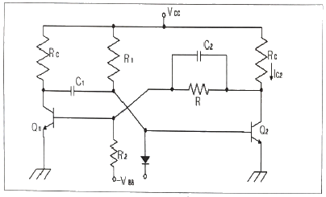
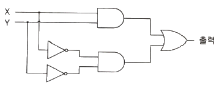
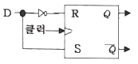
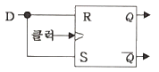
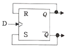
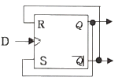
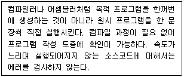

방송통신산업기사 (2022-10-08 기출문제)
1과목: 디지털 전자회로
1. 다음 중 아래의 브리지 정류회로를 배전압 전파정류회로로 변경하고자 할 때 가장 올바른 방법은?

- 다이오드 D1, D2를 저항으로 바꾼다.
- 다이오드 D1, D4를 저항으로 바꾼다.
- 다이오드 D2, D4를 커패시터로 바꾼다.
- 다이오드 D3, D4를 커패시터로 바꾼다.
(정답률: 알수없음)

2. 다음 중 정류회로에 사용되는 평활회로는 어느 것인가?
- 저역 여파기
- 고역 여파기
- 대역통과 여파기
- 광대역 여파기
(정답률: 알수없음)
3. 다음 중 직렬형 정전압회로의 특징으로 틀린 것은?
- 부하저항이 클 때 효율은 병렬형에 비교하여 높다.
- 출력전압의 넓은 범위에서 쉽게 설계될 수 있다.
- 증폭단을 증가시킴으로써 출력저항 및 전압 안정 계수를 작게할 수 있다.
- 출력단자가 단락되더라도 트랜지스터가 파괴되는 경우는 없다.
(정답률: 알수없음)
4. 다음 중 에미터 플로워(Emitter Follow)의 특징이 아닌 것은?
- 입·출력임피던스가 대단히 높다.
- 부하저항이 변화해도 전류, 전압, 전력이득을 일정하게 유지할 수 있다.
- 전압이득은 1에 가깝다.
- 전류이득이 크다.
(정답률: 알수없음)
5. 다음 중 에미터(Emitter) 공통 증폭기에 대한 설명으로 틀린 것은?
- 출력 전압은 입력 전압과 90°의 위상차가 나타난다.
- 전류 이득은 베이스 전류와 컬렉터 전류의 비를 말한다.
- 전력 이득은 전압 이득과 전류 이득의 곱을 말한다.
- 바애피스 커패시터는 전압 이득을 증가시킨다.
(정답률: 알수없음)
6. 트랜지스터를 사용한 이상(phase shift) CR 발진기에서 발진을 지속하기 위해 트랜지스터의 증폭도는 최소 얼마 이상이어야 하는가?
- 10
- 29
- 100
- 156
(정답률: 알수없음)
7. 다음 중 트랜지스터 증폭회로에서 부궤환을 걸었을 때 일어나는 현상이 아닌 것은?
- 안정도가 좋아진다.
- 비직선 일그러짐이 적어진다.
- 주파수 특성이 개선된다.
- 대역폭이 감소한다.
(정답률: 알수없음)
8. 다음 그림의 전력 증폭기에서 최대 출력신호전압의 실효치는? (단, 입력신호는 정현파이다.)

- 2 VCC
- VCC
- VCC / 2
- VCC / √2
(정답률: 알수없음)
9. 발진기에서 구현할 수 있는 파형이 아닌 것은?
- 사인파(Sine Wave)
- 구형파(Rectangular Wave)
- 충격파(Impulse Wave)
- 삼각파(Triangle Wave)
(정답률: 알수없음)
10. 다음 중 수정 발진기와 거리가 먼 것은?
- 피어스 BE 발진기
- 피서으 BC 발진기
- 무조정 발진기
- 블로킹 발진기
(정답률: 알수없음)
11. 진폭변조 회로에서 피변조파 전력이 30[kW]이고 변조도가 100[%]라면 반송파 전력을 얼마인가?
- 10[kW]
- 20[kW]
- 30[kW]
- 40[kW]
(정답률: 알수없음)
12. 주파수 변조에서 변조지수가 6이고, 신호의 최고 주파수를 10[kHz]라고 하면 그 소요 대역폭은 몇 [kHz] 인가? (단, 광대역 FM이라 가정한다.)
- 20[kHz]
- 60[kHz]
- 100[kHz]
- 120[kHz]
(정답률: 알수없음)
13. 다음 중 포스터-실리(Foster-Seeley)형과 비검파(Radio Detector) 회로에 대한 설명으로 틀린 것은?
- 비검파 회로는 다이오드 접속 방향이 다르다.
- 포스터-실리형과 비검파 회로의 검파출력비는 2:1 이다.
- 비검파 회로는 진폭제한기가 필요하지 않다.
- 포스터-실리형과 비검파 회로의 검파감도비는 1:2 이다.
(정답률: 알수없음)
14. 변조도 80[%]의 진폭 변조를 제곱 검파했을 때 출력에 나타는 왜율은?
- 10[%]
- 20[%]
- 30[%]
- 40[%]
(정답률: 알수없음)
15. 다음 중 펄스 스위칭 회로에서 2개의 안정 상태를 가지며 외부 트리거 펄스에 의해 이들 상태들을 번갈아 스위칭하는 회로는?
- 쌍안정
- 단안정
- 비안정
- 쌍극성
(정답률: 알수없음)
16. 다음 회로에서 커패시터 C2의 역할은?

- 결합 커패시터
- 바이어스 커패시터
- 바이패스 커패시터
- 스피드업 커패시터
(정답률: 알수없음)
17. 다음 논리회로에서 입력 X는 0, Y는 1일 때 출력값 및 논리회로와 등가인 논리게이트(Logic Gate)를 표현한 것으로 옳은 것은?

- 1, NOR 게이트
- 0, EX-NOR 게이트
- 0, NAND 게이트
- 1, EX-OR 게이트
(정답률: 알수없음)
18. 논리식 A(A + B + C)를 간단히 하면?
- 1
- 0
- B + C
- A
(정답률: 알수없음)
19. 다음 중 하향 비동기식 카운터에 대한 설명으로 옳은 것은?
- 0000에서 1111까지 카운트 한다.
- 출력주파수는 1/2, 1/4, 1/8, 1/16 갖는 구형파가 출력된다.
- 4번째 클럭펄스 10진수 카운터 상태값은 4이다.
- 펄스의 상승에지(Rising Edge)에서 트리거된다.
(정답률: 알수없음)
20. 다음 중 RS 플립플롭으로 구현된 D 플립플롭 회로는?




(정답률: 알수없음)
2과목: 방송통신 기기
21. 다음 중 영상 편집방법에 있어서 이미 기록된 영상의 중간에 Control 신호의 변환 없이 별도의 영상이나 음성을 삽입할 수 있는 편집 모드는?
- Assemble 편집 모드
- Insert 편집 모드
- Full Copy Mode
- Preview Mode
(정답률: 알수없음)
22. 다음 중 영상 제작 설비와 관련 없는 것은?
- Camera
- Video Swicher
- VDA
- ADA
(정답률: 알수없음)
23. 다음 중 송신설비에 해당하지 않는 것은?
- 송신기
- VTR 설비
- 송신 안테나
- 송신 급전선
(정답률: 알수없음)
24. 다음 중 마이크의 지향성과 관계 없는 것은?
- 전지향성
- 단일지향성
- 수직지향성
- 양지향성
(정답률: 알수없음)
25. 다음 중 초단파(VHF)에 대한 설명으로 옳지 않은 것은?
- 파장이 1[m]~10[m] 정도이다.
- 간섭성과 회절성이 존재한다.
- 전리층에서 반사되므로 대륙간 원거리 통신에 적합하다.
- 극초단파와 더불어 방송과 각종 통신에 가장 많이 이용되고 있다.
(정답률: 알수없음)
26. 진폭변조 회로에서 반송파 전력이 100[W]일 때 변조율이 60[%]일 경우 상측파대의 전력은 몇 [W] 인가?
- 6
- 7
- 8
- 9
(정답률: 알수없음)
27. AM 방송용 송신 장치에 관한 다음 설명 중 틀린 것은?
- AM 송신 장치는 주송신기, 예비송신기, 더미안테나, 더미 로드, 급전선 및 안테나, 제어 감시장치, 송풍 및 냉각 장치, STL 등으로 구성된다.
- 송신기는 주파수 변동이 없어야 하며 변조의 직선성이 좋아야 한다.
- 송신 안테나는 지향성을 주로 사용한다.
- AM 송신기의 완충증폭기는 안정성을 고려하여 주로 A급 증폭방식을 사용한다.
(정답률: 알수없음)
28. FM변조 시 피변조파의 소요대역폭은? (단, fs : 신호주파수, △f : 최대주파수편이)
- BW = 2(△f+fs)
- BW = 2△f+fs
- BW = △f+2fs
- BW = △f+fs
(정답률: 알수없음)
29. TV 영상신호를 제작하기 위하여는 카멜, VCR, 영상스위치어 등 다수의 비디오 제작 및 편집장비가 필요한데 이들 장비 간에 동기가 되지 않을 경우에는 화면이 흐르거나 순간적으로 화면이 무너지는 현상을 초래한다. 이런 현상을 막기 위한 장치 간에 동기 방법에 해당되지 않는 것은?
- Line lock
- Video lock
- Sync lock
- Genlock
(정답률: 알수없음)
30. 다음 MPEG DATA 구조에서 가장 범위가 큰 것은?
- 블록
- 슬라이스
- 픽쳐
- GOP
(정답률: 알수없음)
31. 방송용 디지털 오디오에 대한 설명 중 틀린 것은?
- Discrete Time Sampling은 시간에 대하여 연속적으로 변화하는 신호파형을 시간축에 대하여 일정한 간격으로 분할한 불연속한 펄스열을 말한다.
- 입력신호가 1/2 샘플링 주파수보다 높은 신호인 경우 원래 신호로 재생 불가한 Aliasing이 생긴다.
- AES/EBU 디지털오디오 신호는 기존의 아날로그 음향전송 케이블과 콘넥터(XRL)사용이 가능하며 차폐된 평행의 twist pair상호 접속 처리로 100m까지도 전송이 가능하다.
- 임피던스는 50Ω의 신호원과 부하가 필요하고 동축 케이블 및 불평행 전송로 고려, 일부 장지에서는 음향출력이 1V인 BNC 콘넥터를 채택하고 있다.
(정답률: 알수없음)
32. 스피커의 인클로져(Enclosure)를 베이스 리플렉스(Bass-reflex) 형이나 백 로딩(BAck-loading)형으로 만드는 이유는?
- 고음역의 재생 특성을 개선하기 위하여
- 스피커 후면으로부터 방사되는 소리와의 간섭을 제거하기 위하여
- 스피커의 수평 방향 재생 특성을 개선하기 위하여
- 저음역의 재생 특성을 개선하기 위하여
(정답률: 알수없음)
33. 양방향 텔레비전 방송시스템의 설계 시 고려 사항 중 알맞은 사항은?
- 가입자의 송·수신 트래픽에 따른 전송용량의 제한이 없다.
- 다중접속방식에 따른 채널할당을 고려한다.
- 프로토콜의 정합 및 변환방식에 무관하다.
- 가입자 망설계를 임의로 구성해도 좋다.
(정답률: 알수없음)
34. 위성통신의 다원접송방식이 아닌 것은?
- FDMA
- VSB
- CDMA
- TDMA
(정답률: 알수없음)
35. 위성방송의 전파세기를 나타내는 전력속밀도의 단위는?
- dBW/m2
- dBmW/m3
- dBiW/m2
- dBiW/m3
(정답률: 알수없음)
36. 국내 위성 및 인텔셋 소유 위성에 TV 신호를 전송하기 위해 사용하는 이동위성 지구국은?
- ENG
- SNR
- SNG
- EFP
(정답률: 알수없음)
37. 다음 중 웨이브폼 모니터로 영상신호 파형 이외의 측정이 가능한 것은?
- 혼변조 현상
- 버스트신호 레벨
- 색부반송파 위상
- 지연왜곡 현상
(정답률: 알수없음)
38. 전송중계 케이블의 신호전압 및 잡음전압이 각각 100[V]와 0.1[V]라면 신호대잡음비는 몇 [dB]인가?
- 10
- 20
- 30
- 60
(정답률: 알수없음)
39. 다음 중 송신기에서 부하변동에 따른 주파수의 변동을 방지하기 위하여 사용하는 회로는?
- 발진 증폭부
- 완충 증폭기
- 주파수 체배기
- 전력 증폭기
(정답률: 알수없음)
40. 다음 중 수신하려는 희망전파를 다른 주파수의 전파로부터 어느 정도까지 분리할 수 있는지의 능력을 의미하는 것은?
- 감도
- 선택도
- 충실도
- 안정도
(정답률: 알수없음)
3과목: 방송미디어 개론
41. 디지털 음성, 위성서비스의 규격화를 추진하는 비영리 표준화 단체를 말하는 것은?
- DTV
- DAVIC
- DVD
- DVB
(정답률: 알수없음)
42. 텔레비젼 수신기에서 2차원의 화상을 1차원의 전기적인 신호로 전송하기 위해 2차원 화상을 1차원적인 화상으로 재배열하는 것은?
- 변조
- 주사
- 복조
- 편이
(정답률: 알수없음)
43. 다음 중 AM과 비교하여 FM 통신방식의 특징이 아닌 것은?
- S/N 비가 좋다.
- 송신기의 효율을 높일 수 있고, 일그러짐이 적다.
- 혼신 방해를 적게 받는다.
- 주파수 대역폭이 AM보다 작다.
(정답률: 알수없음)
44. 주파수 범위가 300[MHz]~3,000[MHz]인 전파의 주파수대의 약칭은?
- MF
- HF
- VHF
- UHF
(정답률: 알수없음)
45. 200[W]를 dBm로 환산한 레벨 값은?
- 33[dBm]
- 53[dBm]
- 200[dBm]
- 300[dBm]
(정답률: 알수없음)
46. 단파방송에서 단측파대(SSB: Single Side Band) 방송의 특징을 잘못 설명한 것은?
- 송신기의 전력소비가 많아진다.
- 인접 혼신보호비가 개선된다.
- 선택성 페이딩에 의한 비직선 왜곡을 저감시킨다.
- 대역폭은 양측파대(DSB: Double Side Band)의 반이다.
(정답률: 알수없음)
47. 소리의 3요소가 아닌 것은?
- 소리의 높이
- 소리의 크기
- 소리의 속도
- 소리의 음색
(정답률: 알수없음)
48. 동일한 채널 대역폭에서 데이터 전송률[bps] 특성이 가장 우수한 방송은?
- 케이블방송
- 위성방송
- 지상파방송
- DMB방송
(정답률: 알수없음)
49. 일반적으로 인터넷에 연결된 컴퓨터는 총 12자리의 숫자로 구성된 IP 주소를 갖는다. 이와 같은 IP 주소는 총 몇 비트로 구성되는가?
- 16비트
- 32비트
- 64비트
- 128비트
(정답률: 알수없음)
50. 화면에 다음 보기의 영상이 있을 때 화면내의 상관도가 가장 높은 경우는?
- 깨끗한 화이트 보드
- 알록달록한 체크무늬
- 단풍이 든 나무 숲
- 잔잔한 물결이 이는 강물
(정답률: 알수없음)
51. 인터넷 시스템에서 송신자가 지정된 몇 개의 수신 호스트에게 데이터를 전송하는 방식은?
- 푸시(Push) 기술
- 스트리밍(Streaming) 기술
- 유니 캐스트(Unicast) 기술
- 멀티 캐스트(Multicast) 기술
(정답률: 알수없음)
52. 위성방송 수신 시 필요한 수신 시스템이 아닌 것은?
- 접시안테나(Parabolic Antenna)
- 저 잡음 주파수변환기(LNB)
- 단말기(Set Top Box)
- 변조기
(정답률: 알수없음)
53. 우리나라 지상파(ATSC)방송의 데이터방송 표준규격은?
- DVB-MHP(Digital Video Broadcasting-Multimedia Home Platform)
- ACAP(Advanced Common Application Platform)
- OCAP(Open Cable Application Platform)
- MHW(Media Hogh Way)
(정답률: 알수없음)
54. 동일한 선로에 지상파방송 주파수의 대역신호와 위성방송 신호주파수의 대역을 공동으로 전송할 수 있는 선로설비는?
- ATV
- NATV
- QATV
- SMATV
(정답률: 알수없음)
55. 다음 중 컴퓨터 네트워크 형태에서 피어-투-피어(Peer-to-Peer) 방식의 특징이 아닌 것은?
- 네트워크 설치 및 설정이 쉽다.
- 네트워크 설치비용이 저렴하다.
- 네트워크 상의 데이터에 대한 보완이 가능하다.
- 각각의 사용자에 의해서 모든 자원이 제어된다.
(정답률: 알수없음)
56. 지상파(DTV) 전송방식에서 8-VSB 지상파 모드에서의 각 데이터 세그멘트는 몇 심벌인가?
- 829[symbols]
- 830[symbols]
- 831[symbols]
- 832[symbols]
(정답률: 알수없음)
57. 통신위성(Communication Satellite)이 사용하는 주파수 범위는?
- 30~300[kHz]
- 3~30[GHz]
- 3~30[MHz]
- 30~300[MHz]
(정답률: 알수없음)
58. 다음 중 디지털 방송 시스템의 특징이 아닌 것은?
- 고품질의 수신
- 채널의 다양화
- 대화형 서비스
- 수신 형태의 일원화
(정답률: 알수없음)
59. 우리나라의 디지털 TV 전송 방식(ATSC)은 음향과 영상을 각각 어느 방식으로 하는가?
- 음향 MPEG1, 영상 Dolby-AC3
- 음향 MPEG1, 영상 MPEG2
- 음향 MPEG2, 영상 MPEG1
- 음향 Dolby-AC3, 영상 MPEG2
(정답률: 알수없음)
60. 다음 중 마이크로파 통신시스템의 전파 방해를 감소하기 위한 대책으로 관계가 없는 것은?
- 조용한 장소를 선택
- 적절한 차폐물의 이용
- 안테나의 지향성 개선
- 해변, 호수 등의 반사파 지역 선정
(정답률: 알수없음)
4과목: 전자계산기 일반 및 방송설비기준
61. 2진수 (1101.1011)을 10진수로 표시한 값은 얼마인가?
- 11.8125
- 13.8125
- 11.6875
- 13.6875
(정답률: 알수없음)
62. 다음 부울대수(Boolean Algebra) 공식 중 틀린 것은?
- X + 0 = X
- X + X = X
- X • X = 1
- X + 1 = 1
(정답률: 알수없음)
63. 88 – 51을 10의 보수를 이용한 값은?
- 13
- 17
- 37
- 49
(정답률: 알수없음)
64. 다음 중 해밍코드에 대한 설명으로 맞는 것은?
- 오류를 검출할 수는 있으나, 교정할 수 없다.
- 패리티 비트의 길이에 따라 정보 비트의 수가 결정된다.
- 한 비트당 최소한 세 번 이상의 패리티 검사가 이루어진다.
- 해밍코드에서 4개의 정보 비트를 체크하기 위한 최소한의 패리티비트는 3개가 된다.
(정답률: 알수없음)
65. 다음 중 이중 연결 리스트(Doubly linked list)에 대한 설명으로 틀린 것은?
- 삭제 또는 삽입 대상 노드의 앞 노드를 식별한다.
- 리스트를 양쪽 방향으로 처리한다.
- 두 개의 링크를 사용한다.
- HEAD, TAIL 노드를 가진다.
(정답률: 알수없음)
66. 다음 중 구조적 프로그램의 기본 구조가 아닌 것은?
- 순차 구조
- 선택 구조
- 반복 구조
- 배치 구조
(정답률: 알수없음)
67. 다음은 어떤 프로그래밍 번역기에 대한 설명인가?

- Translator
- Linking Loader
- Generator
- Interpreter
(정답률: 알수없음)
68. 다음 중 32비트 컴퓨터에서 8 Full Word 와 6 Nibble은 각각 몇 비트인가?
- 256비트, 48비트
- 128비트, 24비트
- 256비트, 24비트
- 128비트, 48비트
(정답률: 알수없음)
69. 다음 중 멀티 프로세서에서 각 CPU가 별도의 캐시를 가지면서도 캐시 일관성을 보장 받기 위해 필요한 기법은?
- Write Through
- Interleaving
- Cycle Steal
- Priority Control
(정답률: 알수없음)
70. 다음 중 기억공간의 효율화를 위해 단편화된 가용공간을 모아 하나의 큰 가용공간으로 만들어 메모리를 반납하는 것은?
- Address Mapping
- Virtual Address Space
- Garbage Collection
- Time Slice
(정답률: 알수없음)
71. 방송통신심의위원회는 방송의 공정성 및 공공성을 심의하기 위하여 방송심의에 관한 규정에 포함되어야 할 사항이 아닌 것은?
- 공중도덕과 사회윤리에 관한 사항
- 국제적 우의 증진에 관한 사항
- 국민 건강보험과 보건복지에 관한 사항
- 민족문화의 창달과 민족의 주체성 함양에 관한 사항
(정답률: 알수없음)
72. 다음 중 방송편성의 자유와 독립의 내용으로 가장 옳은 것은?
- 누구든지 방송편성에 관하여 방송법 또는 다른 법률에 의하여 규제나 간섭이 가능하다.
- 방송사업자는 방송편성 책임자를 선임하고, 그 성명을 방송시간 내에 매일 2회 이상 공표하여야 한다.
- 방송편성의 자유와 독립은 보장 된다.
- 방송은 민주적 기본 질서를 존중하여야 한다.
(정답률: 알수없음)
73. 다음 중 정보통신공사업의 등록기준에 옳게 연결된 것은?
- 법인 : 자본금 – 2억원 이상, 기능계 정보통신기술자 – 1인 이상, 사무실 – 15[m2] 이상
- 개인 : 자산평가액 – 1억5천만원 이상, 기술계 정보통신기술자 – 3인 이상, 사무실 – 정보통신기술자 등이 항상 이용 가능하고 필요한 사무장비를 갖출 수 있는 공간이 확보된 사무실
- 법인 : 자본금 – 1억5천만원 이상, 기술계 정보통신기술자 – 5인 이상, 사무실 – 15[m2] 이상
- 개인 : 자산평가액 – 2억원 이상, 기능계 정보통신기술자 – 2인 이상, 사무실 – 정보통신기술자 등이 항상 이용 가능하고 필요한 사무장비를 갖출 수 있는 공간이 확보된 사무실
(정답률: 알수없음)
74. 스퓨리어스영역 불요발사의 허용치에서 중파 / 단파방송업무의 안테나 공급전력에 대한 감쇠값은?
- 50[dBc]이고, 평균전력 10[mW] 초과하지 아니할 것
- 50[dBc]이고, 평균전력 20[mW] 초과하지 아니할 것
- 50[dBc]이고, 평균전력 30[mW] 초과하지 아니할 것
- 50[dBc]이고, 평균전력 50[mW] 초과하지 아니할 것
(정답률: 알수없음)
75. 다음 중 방송통신위원회에 허가신청서를 제출해야 하는 사업이 아닌 것은?
- 종합유선방송사업
- 전광판사업
- 중계유선방송사업
- 위성방송사업
(정답률: 알수없음)
76. 보호기의 과전압 성능에 해당되지 않는 것은?
- 보호기는 100[V/μs]의 상승전압을 L1-E, L2-E 간에 인가할 때 180[V] 이상 600[V] 이하에서 접지를 통하여 방전되어야 한다.
- 보호기는 직류 100[V/sec]의 상승전압을 L1-E, L2-E 간에 인가할 때 184[V] 이상 280[V] 이하에서 접지를 통하여 방전이 개시되어야 한다.
- 보호기는 직류 1,000[V/μs]의 상승전압을 L1-E, L2-E 간에 인가할 때 180[V] 이상 700[V] 이하에서 접지를 통하여 방전되어야 한다.
- 보호기는 직류 300[V/sec]의 상승전압을 인가할 때 1분 이내에 접지를 통하여 방전이 개시되어야 한다.
(정답률: 알수없음)
77. 다음 중 정보통신공사업의 폐업신고 대상자가 아닌 것은?
- 공사업을 폐업한 경우에는 그 공사의 발주자
- 공사업자가 파산한 경우에는 그 파산관계인
- 법인이 합병 또는 파산 외에 사유로 해산한 경우에는 그 청산인
- 공사업자가 사망하였으나 상속인이 그 공사업을 상속하지 아니하는 경우에는 그 상속인
(정답률: 알수없음)
78. 다음 중 정보통신공사의 하자담보책임에서 대통령령이 정하는 기간이 3년에 해당하는 공사가 아닌 것은?
- 철탑공사
- 전송설비공사
- 위성통신설비공사
- 통신구공사
(정답률: 알수없음)
79. 변조하기 전의 정보를 포함하고 있는 주파수 대역을 무엇이라 하는가?
- 고저대역
- 기저대역
- 중고대역
- 음성대역
(정답률: 알수없음)
80. 다음 중 가상광고가 허용되지 않는 방송프로그램은? (단, 주 시청자가 어린이가 아닌 경우)
- 운동경기를 중계하는 방송프로그램
- 교양에 관한 방송프로그램
- 오락에 관한 방송프로그램
- 스포츠 분야의 보도에 관한 방송프로그램
(정답률: 알수없음)